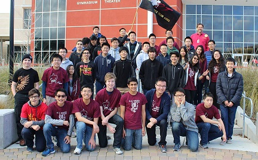

Science Clubs
APP IT OUT
 Our club was started this year with the goal of teaching students of all grades basic coding. We believe all students have the potential to code and make programming useful for themselves and others. Meet Thursdays at lunch in room 308
Our club was started this year with the goal of teaching students of all grades basic coding. We believe all students have the potential to code and make programming useful for themselves and others. Meet Thursdays at lunch in room 308
BIOLOGEES
The Biologees Club takes biology out of the classroom and puts it in a “field-trip-like” perspective. We hold dissections, clean ups, and visits to local museums and other relevant places. Oh, and we take selfies. Meet Fridays at lunch in room 243
COMPUTER SCIENCE
 This is the first year of computer science club. Our goal is to provide opportunities for students who are interested in computer engineering and programming to explore the realm of computing. Each year we participate at Stanford’s programming contest to learn and share our knowledge with others who share the same passion as us. If you’re interested in computers, come and hang out with us! Meet Mondays at 3:20 in room 231
This is the first year of computer science club. Our goal is to provide opportunities for students who are interested in computer engineering and programming to explore the realm of computing. Each year we participate at Stanford’s programming contest to learn and share our knowledge with others who share the same passion as us. If you’re interested in computers, come and hang out with us! Meet Mondays at 3:20 in room 231
ECOHUB
New Club that strives to protect the environment as it is deteriorating as time passes. We hope to make a difference, not only in the community of Millbrae, but in other locations as well. Meets are held Wednesdays in room 214.
GREEN YOUTH ALLIANCE (GYA)
We are an environmental club focused always on the education of environmental topics and we participate in lots of projects with the goal of working toward an environmentally friendly world. Meet Thursdays at lunch in Ms Michot’s room
MATHEMATICA CLUB
Founded last year by Michael Chang and David Lu, the Mills Mathematica Club is a gathering of students interested in learning the Wolfram Language. The Wolfram language has been gaining more popularity in the the workplace and among developers making it a useful language for STEM companies. Mathematica meetings cultivate an environment conducive to learning the Wolfram language. Meet Tuesdays at lunch in room 223
PHYSICS CLUB
The goal of this club is to bring students who are interested in the physical sciences and to provide activities related to physics. Meetings are held every Thursday during lunch in room 262.
ROBOTICS TEAM
The Mills Robotics Team 253 was established in 1999. It has been competing for fifteen years, earning numerous awards such as the 2000 Judge’s Award at the NASA Ames Regional and the 2002 Imagery Award at the Silicon Valley Regional. Every year, we attend a regional competition in the spring and an off-season competition in the fall. This teaching fosters a cooperative learning environment that encourages and helps students acquire a wide variety of technical skill useful for STEM careers. Meet Wednesdays 3:30-5:30 in room 262